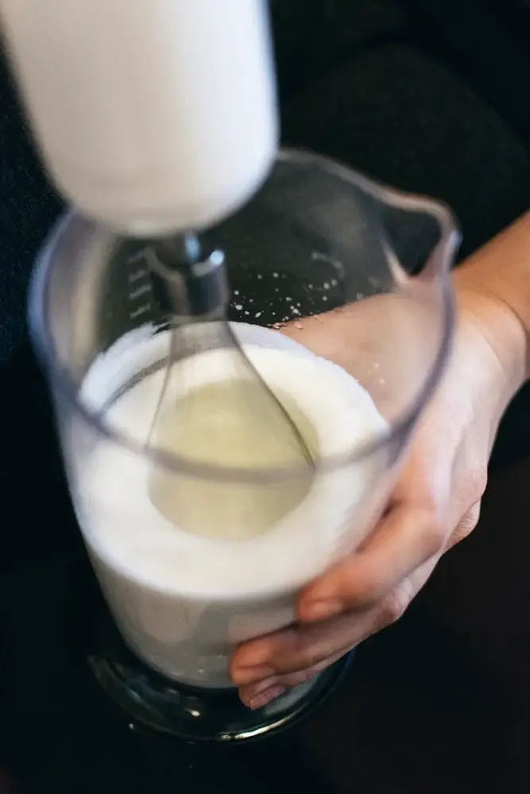

文章 / 飲品配方與資訊
Know your toppings – Cream Top
這篇是英文原文，尚未完成繁體中文翻譯。中文選單與相關商品連結不會切回英文介面。

查看英文原文（尚未翻譯）
Bubble tea toppings isn’t just about tapioca pearls, coconut jellies and popping boba: What goes on top also matters! Of all these cup-topping delicacies, what tops the ranks (pun intended) is the classic cream top!
What makes this topping so captivating? Read on to learn more!

What are cream tops?
Cream cheese, Rock salt crema, Cheese foam, Sea salt cheese…all these names refer to the same thing: A thick, creamy layer of milk foam!
It’s a step up from the typical milk foam or whipped cream you’d find in iced coffee, featuring a thicker texture and more savoury taste in comparison.
By adding a generous layer, your typical bubble tea becomes a rich and creamy, sweet yet savoury mix. Give yourself a milk moustache by taking a sip, then mix and dig in!
What flavours are available?
As the many different names mentioned above would suggest, salted cheese flavour is what puts this unique topping on the spotlight. However, it’s more than just cheese!
Prefer something lighter and more aromatic? Try vanilla or rose flavours for a change! Paired with a light tea such as green tea, this fragrant drink is a satisfying sip!
Want something more unique instead? Why not salted duck egg? While this may sound like an odd choice, it’s actually pretty popular in Southeast Asia!
The strong eggy flavours from the duck egg is a great burst of umami, while the sweet cream balances out the saltiness nicely. Give it a try!


How do you make cream tops?
The classic way to make it is to whisk fresh cream, cream cheese and milk to form a thick foam. Once finished, simply ladle the foam on top of your bubble tea!
Usually just the foam with a lighter tea base (oolong or green tea) would be enough, as the foam already lends a lot of creaminess to the drink.
What if you can’t get enough of your milk fix? Add it to various milk teas, or the ever-classic brown sugar boba milk.
Some even finish it off with a creme’ brulee flourish – simply sprinkle some brown sugar on top, then use a blowtorch to create that iconic caramel-tastic crunch!
Give it a try!
Want to give cream tops a try? We make it easy with our pre-mix powders.
Simply mix the powder with cream and milk, and voila!
Available in different flavours, it’s the perfect way to get started with this star topping.
Pick up the powder to get started!